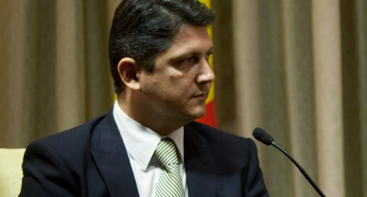

Na poziv prve potpredsjednice Vlade i ministrice vanjskih i europskih poslova Vesne Pusić, u Hrvatskoj boravi rumunjski ministar vanjskih poslova Titus Corlățean.
 Osim s ministricom Pusić, rumunjski ministar vanjskih poslova Corlățean, sastat će se s predsjednikom Ivom Josipovićem te predsjednikom Hrvatskog sabora Josipom Lekom. Drugog dana boravka u Hrvatskoj posjetit će općinu Kršan u Istarskoj županiji te mjesta Čepić i Šušnjevica.
Na sastanku s ministricom Pusić glavne teme razgovora bit će bilateralni odnosi, zatim aktualne EU teme, odnosno izbori za EP te tržište rada i programi za smanjenje nezaposlenosti mladih. Također će se razgovarati i o suradnji u regiji kroz regionalne forume te o daljnjem proširenju EU, kao i o Istočnom partnerstvu, te o ostalim temama od obostranog interesa.
Iz Ministarstva vanjskih i europskih poslova ističu kako su hrvatsko-rumunjski odnosi vrlo dobri, a posljednjih godina i vrlo intenzivni posebno kada je riječ o suradnji unutar regionalnih organizacija i foruma SEECP, Dunavska strategija i Dunavska komisija te unutar EU i NATO.
"Redovito se održavaju konzultacije na razini dvaju ministarstava vanjskih poslova, a dobra se suradnja ostvaruje i na razini drugih ministarstava, posebno unutarnjih poslova i pravosuđa. Predsjednik Sabora Leko Rumunjsku je posjetio prošle godine, dok je predsjednik Josipović u službenom posjetu boravio u srpnju. Prošle je godine Hrvatsku posjetio predsjednik Senata rumunjskog parlamenta Antonescu, koji je sudjelovao i u svečanom obilježavanju ulaska Hrvatske u EU. Također, u Bukureštu je u studenom 2013. održan sastanak predsjednika Vlada 16 zemalja srednje i istočne Europe i Kine, na kojem su sudjelovali premijer Milanović i ministar Hajdaš - Dončić.
Kada je riječ o gospodarskim odnosima, prošle je godine zabilježen pad robne razmjene koja je u prvih 10 mjeseci 2013. iznosila 153,8 m Eura, dok je 2012. iznosila 227,1 milijuna Eura. Potencijalna područja gospodarske suradnje su na području energetike, zatim strojogradnje, metalurgije, kemijske i petrokemijske industrije. U razdoblju od 1993 do 2012 hrvatska ulaganja u Rumunjsku iznose 10,5 milijuna Eura, dok nisu zabilježena izravna rumunjska ulaganja u Hrvatsku.
Inače, rumunjsko gospodarstvo bilježi blagi oporavak protekle dvije godine, uz umjerenu stopu nezaposlenosti (7,3%), inflaciju (3,2%) i visoku zaduženost (96,6 mlrd €) te deficit u robnoj razmjeni (8,9 mlrd €) i platnoj bilanci (-4,8% BDP). Glavni trgovinski partneri su Njemačka, Italija, Francuska i Mađarska. Očekivana stopa rasta u ovoj godini, prema izvješću MMF-a, mogla bi doseći 2,2%, dok se za 2015. g. predviđa rast od 2,5%.
Prošle, 2013. g. zabilježen je porast dolaska rumunjskih turista u RH za 5,3 % u odnosu na prethodnu godinu, odnosno Hrvatsku je posjetilo 63.895 rumunjskih turista koji su ostvarili 252 797 noćenja.
U Rumunjskoj živi oko 5.500 pripadnika hrvatske manjine koja njeguje tradiciju i jezik. Priznati su kao nacionalna manjina te imaju mogućnost školovanja na hrvatskom jeziku, u 7 bilingvalnih vrtića, 8 osnovnih škola i 1 gimnaziji, koje polazi oko 600 učenika. Hrvati djeluju u dvije organizacije 'Zajedništvo Hrvata u Rumunjskoj' (Karaševo), te 'Demokratski savez Hrvata u Rumunjskoj' (Lupak). Hrvatska zajednica u Rumunjskoj se posljednjih godina smanjuje, a dijelom i radi financijske situacije, smanjuje se i broj škola u kojima se uči hrvatski jezik. Hrvatski konzulat sa sjedištem u Resiti (Rešici) otvoren je 2005., a rumunjski konzulat u Rijeci otvoren je 2006. Rumunjska manjina u Hrvatskoj ima priznat status nacionalne manjine, prema popisu iz 2011 ima ih 475, međutim nisu organizirani u udrugu.
Istrorumunjski govor nalazi se na listi zaštićene baštine Hrvatske te je na UNESCO-voj listi ugroženih jezika, a njegovo učenje organizira udruga 'Tragovi' u suradnji sa školama u Šušnjevici i Čepiću, te uz podršku lokalne zajednice", priopćili su iz Ministarstva vanjskih i europskih poslova.
February 5, 2014
© 2014 Index